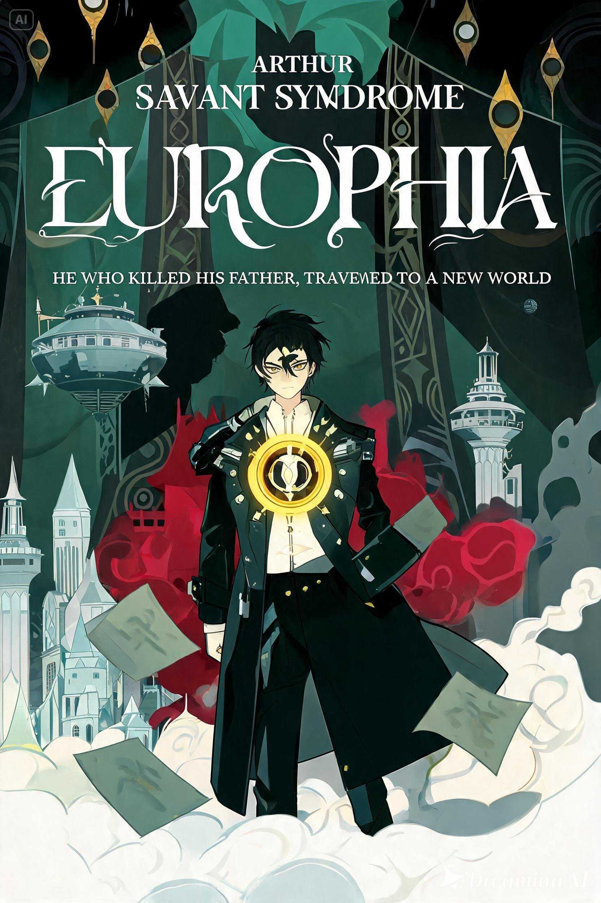
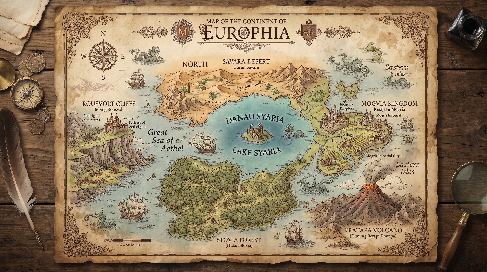

DAFTAR ISI
- BAB I: Gelapnya Malam Menutupi Sinar Mentari
- BAB II: Sang Senja Berubah Menjadi Bulan Penuh Darah
- BAB III: Getaran di Balik Batas Kemampuan

Gelapnya Malam Menutupi Sinar Mentari
Di sebuah negara bernama d’Chaten, hiduplah dua bersaudara yang sifatnya bertolak belakang. Kakaknya bernama Arthur Bolthen, sedangkan adiknya bernama Thesia Ruisan.
Memasuki masa SMA, kehidupan Arthur mulai berantakan. Ia sering membolos sekolah, larut dalam pergaulan bebas, dan mulai akrab dengan minuman keras. Hari demi hari, kebiasaan buruk itu makin sulit dilepaskan.
Berbeda jauh dengan kakaknya, Thesia justru tumbuh menjadi gadis yang rajin dan baik hati. Berkat kecerdasannya, ia berhasil lolos ke universitas terbaik di daerahnya.
Namun bagi Arthur, semua pencapaian itu terasa membosankan.
Selepas lulus sekolah, ia sempat mencoba kuliah, tapi tak bertahan lama. Dengan alasan merasa tidak nyaman, ia memilih keluar dari kampus. Sejak saat itu, Arthur memutuskan hidup terpisah dari orang tuanya dan menetap di sebuah kos kecil di kota Djagahrta.
Setiap bulan, orang tuanya tetap mengiriminya uang sebesar empat juta rupiah. Sayangnya, uang itu tak pernah dipakai untuk hal berguna. Semuanya habis di meja pesta, botol alkohol, dan klub malam.
Hingga suatu hari, kabar duka itu datang.
Kedua orang tuanya meninggal dunia. Bukannya bersedih, pikiran Arthur justru langsung tertuju pada harta warisan yang mereka tinggalkan. Menyadari hal itu, Thesia mencoba menemui kakaknya untuk bicara baik-baik.
“Arthur… kita harus membicarakan soal warisan itu,” ucap Thesia lembut.
Sayangnya, Arthur yang sudah dibutakan keserakahan tak mau mendengar sepatah kata pun. Pertengkaran pun pecah. Dalam luapan emosi, Arthur memukul adiknya hingga jatuh pingsan.
Pada akhirnya, ia berhasil menguasai hampir seluruh warisan keluarga.
Hari-hari berlalu. Arthur hidup bermewah-mewahan dari hasil keringat orang tuanya, sementara Thesia masih saja berusaha membujuk sang kakak agar mau berubah. Suatu malam, gadis itu kembali datang menemuinya.
“Arthur… kau cuma menghabiskan harta jerih payah orang tua kita untuk hal yang tidak jelas. Ingatlah… Tuhan akan membalas setiap perbuatan manusia dengan adil.”
Arthur yang sedang mabuk langsung tersulut emosi. “Heh! Jangan sok suci ngatur hidup gue!” bentaknya.
Pertengkaran itu kembali berujung kasar. Di luar kendali, Arthur menghantam adiknya dengan keras. Tubuh Thesia jatuh terempas ke lantai dan tak lagi bergerak.
Detik itu juga, amarah Arthur lenyap digantikan rasa ngeri yang luar biasa. Adiknya sudah tidak bernyawa.
“A-aku… apa yang sudah kulakukan…?” gumamnya dengan suara bergetar.
Namun, penyesalan selalu datang terlambat.
Berhari-hari Arthur menangis meratapi perbuatannya. Dengan tangan gemetar ketakutan, ia menguburkan jasad adiknya diam-diam di taman belakang pada tengah malam agar tak seorang pun tahu.
Akan tetapi, rasa bersalah terus menghantui pikirannya. Sebulan berlalu, tekanan batin itu makin mencekik hingga ia merasa hidupnya sudah hancur tak bersisa.
Pada malam tanggal 17 Februari 2035, Arthur berdiri di tepi atap sebuah gedung pencakar langit. Angin malam berembus kencang, menyapu air mata yang mengalir di pipinya.
“Maafkan aku… Ayah… Ibu… Thesia…”
Tepat sebelum kakinya melangkah maju, kilatan cahaya terang mendadak menyambar langit. Arthur tersentak kaget. Keseimbangannya hilang, dan tubuhnya pun jatuh meluncur dari gedung itu.
Saat tubuhnya melayang di udara, Arthur menatap langit malam yang pekat. Di tengah kegelapan itu, ia masih sempat melihat kerlip bintang bersinar sebelum tubuhnya menghantam kerasnya tanah.
Hujan turun deras membasahi tubuhnya. Tanggal 17 Februari 2035, Arthur Bolthen mengembuskan napas terakhirnya.
Namun, saat kembali membuka mata, ia tak lagi berada di dunia yang sama. Arthur terbangun di sebuah ruang kosong yang gelap gulita—sebuah kehampaan yang terasa ganjil.
Tak lama kemudian, pemandangan di sekelilingnya berubah. Hutan luas terbentang di hadapannya, dipenuhi pohon-pohon tinggi menjulang dan hewan-hewan aneh yang berkeliaran bebas. Arthur mengerutkan kening. “Apa… ini?”
Ia sempat mengira dirinya sedang berhalusinasi. Namun, pikiran itu langsung buyar ketika gigitan kecil seekor serangga menyengat tangannya. Rasa perihnya nyata. Ini bukan mimpi.
Sehari kemudian, Arthur berjalan menyusuri hutan tanpa arah hingga melihat kibaran bendera di kejauhan. Saat mendekat, ia menemukan sebuah permukiman.
Penduduk di sana bertelinga panjang dengan tubuh ramping. Arthur langsung menyadarinya. “Mereka… elf?”
Warga desa menyambut Arthur dengan ramah dan membawanya bertemu kepala suku. Dari merekalah Arthur mendengar kenyataan yang membuatnya terkejut. Ia kini berada di dunia bernama Rotozh.
Nama itu tidak asing baginya. Justru sebaliknya, nama tersebut pernah menggemparkan seluruh media sosial di d’Chaten.
Beberapa tahun sebelumnya, negara d’Chaten sempat dihebohkan oleh penemuan ilmiah besar yang dijuluki: “Dunia Baru – Rotozh.”
Kisahnya bermula pada tahun 2019, saat para ilmuwan menemukan sesuatu yang aneh di dalam sebongkah komet yang jatuh ke Bumi. Di dalamnya terdapat sejenis bakteri yang strukturnya sangat berbeda dari seluruh organisme yang pernah ditemukan di Bumi.
Setelah diteliti lebih lanjut, para ilmuwan memastikan satu hal mengejutkan: bakteri itu bukan berasal dari Bumi.
Berbagai perhitungan ilmiah dilakukan selama bertahun-tahun. Namun, hingga batas kemampuan sains manusia saat itu, tak ada satu pun yang sanggup menjelaskan dari mana bakteri tersebut berasal.
Banyak ilmuwan akhirnya menyerah dan menghentikan penelitian mereka. Namun, ada satu orang yang menolak berhenti.
Ia terus meneliti bakteri itu selama berbulan-bulan, menghitung setiap kemungkinan dengan sangat teliti. Dua tahun berselang, kerja kerasnya membuahkan hasil luar biasa.
Menurut perhitungannya, bakteri itu berasal dari tempat yang berjarak jutaan tahun cahaya dari Bumi. Lewat berbagai simulasi dan analisis, ia menarik sebuah kesimpulan yang mengguncang dunia sains.
Bakteri itu terbawa oleh black hole atau lubang cacing—fenomena kosmik yang memungkinkan benda berpindah tempat dengan kecepatan mendekati cahaya.
Jurnal penelitian itu dipublikasikan pada 17 November 2022. Bukannya mendapat dukungan, banyak ilmuwan lain justru menertawakannya. “Mendekati kecepatan cahaya? Mustahil,” cibir mereka.
Ilmuwan itu hanya menjawab tenang. “Benar. Benda bermassa tidak mungkin menyamai kecepatan cahaya. Tapi, bagaimana jika benda itu mampu memanipulasi massanya sendiri?”
Para ilmuwan lain terdiam. Ilmuwan itu lalu menjelaskan bahwa bakteri ini punya kemampuan menekan massanya sendiri hingga nyaris mendekati nol.
Penemuan itu menjadi awal era baru di d’Chaten yang dikenal sebagai Golden Era. Dan ilmuwan yang menemukan teori tersebut adalah… Erick Bolthen. Ayahnya sendiri.
Lamunan Arthur buyar. Ia masih berdiri mematung di tengah permukiman elf dengan wajah tak percaya. “Jadi… ini benar-benar dunia itu…” gumamnya.
Jika tempat ini memang Rotozh, maka semuanya masuk akal. Segala sesuatu yang mustahil di Bumi… bisa saja terjadi di sini.
Arthur melihat pemandangan yang membuatnya membeku. Beberapa elf di desa itu terbang bebas di udara tanpa sayap, tanpa alat bantu apa pun. Mereka melayang ringan seperti daun yang tertiup angin.
Tak bisa menahan rasa penasaran, Arthur menoleh pada kepala suku. “Bagaimana mereka bisa melakukan itu?”
Kepala suku tersenyum tipis. “Wajar kalau kau terkejut. Di dunia ini, semua benda punya kemampuan memanipulasi massanya. Kami menyebutnya Mass Zone.”
“Setiap makhluk memiliki zona tempat ia bisa memengaruhi massa benda di sekitarnya. Jika seseorang mampu memahami konsep dunia ini, ia bisa mengontrol apa pun yang berada di dalam zonanya.”
Arthur terdiam. Penjelasan itu terasa begitu familiar—persis seperti catatan riset yang dulu pernah dikerjakan ayahnya. Perlahan, air mata mulai mengalir membasahi pipinya.
Ia teringat semua kesalahan di masa lalu. Ia mengabaikan ayahnya. Ia menghamburkan warisan keluarga. Dan yang paling menyakitkan… ia telah membunuh adiknya sendiri.
Arthur menundukkan kepala sambil menangis. “Jika ini memang kesempatan kedua…” bisiknya pelan.
Ia menatap langit dunia asing itu. “Tuhan… aku menyesal. Aku ingin menebus semuanya… di sini.”
Sang Senja Berubah Menjadi Bulan Penuh Darah
Beberapa bulan telah berlalu sejak Arthur tinggal bersama klan elf. Selama waktu itu, ia tekun belajar mengendalikan Mass Zone.
Selain berlatih, Arthur juga membantu para elf membangun berbagai fasilitas desa, termasuk jembatan besar yang menghubungkan dua gunung agar jalur perdagangan lebih mudah.
Namun, Arthur tak pernah melupakan tujuan utamanya: menemukan cara untuk kembali ke Bumi.
Suatu hari, setelah berpamitan pada kepala suku elf, Arthur memutuskan untuk kembali berkelana. “Aku berutang banyak pada kalian,” ucapnya tulus.
Kepala suku elf tersenyum. “Pergilah. Dunia ini luas, masih banyak hal yang belum kau lihat.”
Arthur pun meninggalkan desa itu. Namun di hari yang sama, konflik baru mulai muncul di wilayah hutan elf. Kekacauan itu bermula dari ulah klan Minotaur.
Makhluk bertubuh raksasa dengan kepala mirip banteng itu sering menerobos hutan elf dan merusak tanaman mereka.
Seorang gadis elf berusia enam belas tahun mencoba menghentikan mereka. Sayangnya, keputusan itu justru mengundang bahaya. Seekor minotaur muncul dari balik hutan dan langsung menyerangnya.
Tubuh makhluk itu besar dan berotot, lengkap dengan kuku tajam serta napas berat seperti binatang buas.
Gadis elf itu mulai terpojok. Di tempat lain, Arthur yang kebetulan melintas di hutan mendengar keributan pertarungan tersebut. Awalnya ia tidak ingin ikut campur.
Namun, begitu melihat seorang elf muda hampir terbunuh, bayangan wajah adiknya langsung terlintas di benaknya. Arthur menggenggam erat tongkat kayu yang selalu ia bawa.
“Aku tidak akan membiarkan ini terjadi lagi!” Ia melompat ke atas dahan pohon dan mengaktifkan Mass Zone miliknya.
Sebuah bola transparan muncul menyelimuti tubuhnya. Dari atas pohon, Arthur langsung menyerang. Ia memanipulasi massa pepohonan di sekitarnya, membuat batang kayu besar meluncur menghantam minotaur itu.
Namun, tubuh minotaur tersebut terlalu kuat. Serangan keras itu hanya membuatnya mundur beberapa langkah. Arthur mulai berkeringat dingin. “Gawat… kekuatannya jauh di atasku…”
Minotaur itu mendongak menatap Arthur dengan marah. Kini, perhatian makhluk buas itu sepenuhnya tertuju padanya.
Pertarungan yang sesungguhnya baru saja dimulai. Arthur perlahan turun kembali ke tanah setelah serangan terakhirnya tadi.
Namun, tiba-tiba tubuhnya terasa aneh. Tenaganya mendadak terkuras habis. Kakinya gemetar, dan sekujur badannya terasa sangat lemas.
“Ada apa dengan tubuhku…?” gumam Arthur sambil memegangi perutnya. “Kenapa tiba-tiba lemas begini? Apa ini efek samping menggunakan Mass Zone?”
Merasa dalam bahaya, Arthur mundur beberapa langkah. Ia menancapkan ujung tongkatnya ke tanah. DUGG! Tanah di sekitarnya bergetar halus.
Getaran itu menyebar perlahan seperti riak di permukaan air. Arthur memejamkan mata sejenak, memusatkan konsentrasinya.
Kemudian ia mengangkat tongkatnya dan berteriak, “Dengan ini… kuciptakan pelindung dari bilah tanah!” Getaran di bawah kakinya mendadak berkumpul.
Tanah di depan Arthur terangkat naik. Sebuah perisai raksasa terbentuk dari lapisan tanah yang memadat keras dengan duri-duri tajam di sekelilingnya.
Arthur lalu melanjutkan, “Dan angin… bergeraklah mengikuti arah embusanku!” Angin di sekitar hutan mulai berputar kencang, memperkuat pertahanan perisai tersebut.
Perisai itu sangat keras dan padat karena Arthur menerapkan prinsip getaran frekuensi rapat melalui tongkatnya.
Minotaur yang berdiri di seberang mengerutkan wajah kebingungan. “Bagaimana mungkin…? Kenapa manusia ini bisa menciptakan materi yang tidak ada di dunia ini?”
Rasa penasaran mengalahkan amarahnya. Minotaur itu menghantam perisai tersebut dengan kedua tangannya. BOOM! Namun, perisai itu tidak bergeming sedikit pun.
Minotaur itu menatap Arthur. “Hei, kau! Bagaimana cara kau menciptakan benda seperti itu? Jangan-jangan… kau ini sebuah anomali?”
Arthur yang masih bertumpu pada tongkatnya berusaha menahan lemas. Napasnya berat, tapi ia tetap menatap minotaur itu dengan tenang.
“Kau ingin tahu kenapa aku bisa melakukan ini? Kalau begitu… sebelum aku menjawabnya, kau harus memberitahuku sesuatu. Apa sebenarnya yang terjadi di dunia ini?” tanya Arthur.
Minotaur itu terdiam sejenak. Wajahnya tampak kesal, tapi rasa ingin tahunya jauh lebih besar.
Akhirnya ia menghela napas berat. “Baiklah, akan kuceritakan. Di dunia ini terdapat berbagai ras dan golongan.”
Ia menunjuk dadanya sendiri. “Aku adalah Minotaur. Ras unggulan dengan kekuatan fisik luar biasa.”
“Ada juga Elf. Mereka terkenal karena kecerdasan dan kekuatan sihirnya. Lalu ada Manusia—ras paling licik yang pandai memonopoli perdagangan.”
“Dwarf, para penambang ulung. Mereka menggali material langka dan menempa armor untuk hampir semua ras.”
“Dan terakhir… Sanctur. Makhluk setengah manusia setengah kuda yang sangat pandai bersembunyi dan ahli memanah.”
Minotaur itu menatap Arthur tajam. “Sekarang jawab pertanyaanku. Kenapa kau ingin tahu hal dasar yang bahkan anak kecil di dunia ini sudah tahu?”
Arthur berbisik pelan, “Bisa dibilang aku adalah sebuah error, bukan bagian dari dunia ini.”
Minotaur yang terkejut sontak kembali menghantam perisai itu—kali ini dengan bantuan armor buatan para dwarf serta kemampuan Mass Zone unik milik fraksinya. Dengan tangan yang dilapisi Mass Zone, ia menerjang maju ke hadapan perisai Arthur.
TRING!
Perisai Arthur lenyap seketika. Efek Mass Zone milik Minotaur mampu membalikkan massa. Jika pada dasarnya semua elemen memiliki massa, maka semua elemen juga bisa merasakan beban massa satu sama lain. Kini, Arthur menerima balik seluruh rasa sakit yang menghantam perisai getarannya tadi.
Kuda-kuda Arthur goyah. Tangan besi Minotaur mendarat sekali lagi tepat di perut Arthur hingga tongkat kayunya terlempar jatuh.
BRUKK!
Arthur ambruk menghadap tanah. Tubuhnya lemas tak berdaya. Melihat lawannya tak lagi sanggup melawan, Minotaur itu langsung mencengkeram leher Arthur.
Getaran di Balik Batas Kemampuan
Saat cengkeraman Minotaur mencekik lehernya, berbagai pikiran langsung berkecamuk di dalam benak Arthur. Layaknya manusia biasa, rasa gentar sempat muncul. Tubuhnya bergetar, sementara tenaganya mulai habis.
“Kau memang kuat, Minotaur. Tapi ingat, tak semua hal di dunia ini harus berlandaskan kekuatan,” ucap Arthur sambil memegang jari-jari besar yang mencengkeram lehernya dengan sisa tenaga. Suaranya terkekeh pelan.
Di sela-sela jari kanan Minotaur sudah terselip bilah kayu tajam, siap menerkam Arthur kapan saja. Melihat itu, Arthur segera mengeluarkan lingkaran Mass Zone miliknya. Jarak satu meter antara mereka dengan pohon tempat Arthur terjatuh langsung tertutupi selaput tipis.
Naas, tepat saat ia hendak melepaskan getaran berfrekuensi tinggi, sekujur tubuhnya justru bergetar hebat karena kelelahan. Melihat lawannya tak berdaya, Minotaur itu langsung mengayunkan bilah kayunya ke arah pelipis Arthur untuk mengakhiri pertarungan.
Namun, tepat saat kayu runcing itu berada sejengkal dari pelipisnya, embusan angin kencang mendadak menderu dari arah selatan. Konsentrasi sang Minotaur buyar; kayu di tangannya terlepas dan jatuh tepat di bawah kaki Arthur. Sumber suara angin itu terdengar sekitar lima ratus meter dari tempat mereka bertarung.
“Suara apa itu? Bagaimana mungkin di tengah hutan ini ada embusan angin sekencang itu?” kata Minotaur sambil menoleh ke arah datangnya suara.
Memanfaatkan kelengahan lawannya, dengan sigap Arthur kembali mengaktifkan Mass Zone. Tanah berguncang hebat, angin bertiup kencang, dan selaput tipis kembali muncul di antara dedaunan mengepung area mereka. Minotaur memincingkan mata, tak menyangka Arthur masih sanggup menggunakan teknik itu sekali lagi.
“Percuma saja! Kau bahkan sudah gagal ta—”
Arthur mengabaikan perkataan itu. Ia fokus menata mantra yang ingin diucapkan. Dengan tekad bulat, ia merapal kata demi kata hingga berhasil memicu getaran berfrekuensi sangat tinggi—berdesing tajam layaknya mata gergaji yang siap mencincang apa pun.
WHOSSS!
“A-apa?!”
Minotaur terbelalak menatap tangan kirinya yang sedari tadi menggenggam Arthur.
Serangan itu menebas putus empat jari kiri sang Minotaur. Darah segar mengalir deras dari ujung jarinya. “AHHHHH—!” teriak Minotaur kesakitan.
“Kau pasti bertanya-tanya bagaimana ini bisa terjadi, kan? Kau lupa kalau kemampuan sejati elf adalah mengekstraksi hukum alam itu sendiri.” Arthur menatap tajam ke arah musuhnya. “Betapa naif dirimu, wahai makhluk angkuh. Kau melupakan hal paling mendasar dari alam. Layaknya tumbuhan, aku bisa mengekstraksi energi matahari dan mengubahnya menjadi tenaga sesaat untuk mengeluarkan Mass Zone milikku.”
Amarah Minotaur langsung memuncak. Dengan tatapan buas, ia menerjang ke depan mengayunkan cakar tajamnya layaknya binatang terluka.
TRANG! TRANG!
Dua puluh menit berlalu dalam pertarungan sengit yang saling membalas serangan. Tongkat Arthur kembali memancarkan getaran kuat, kali ini dengan frekuensi melebar yang membentuk dinding pertahanan kokoh tak tertembus. Batu besar yang dilemparkan dari sisi kanan langsung pecah berkeping-keping begitu menyentuh perisai tersebut.
Tak kehabisan akal, Minotaur mencoba mendobrak langsung dari arah tengah. Ia melompat menghadap Arthur, mengepalkan kedua tangannya erat-erat, bersiap menghantam untuk melemahkan perisai getaran milik Arthur.
BUKKKK! Benturan keras mengguncang tanah di bawah kaki mereka. Perisai getaran Arthur mulai menyempit, tak sekuat tadi. Namun, kondisi sang Minotaur jauh lebih parah: empat jari di tangan kirinya sudah lenyap, telapak tangannya penuh luka robek, dan darah bercucuran dari mulut serta dahinya.
“Ini kesempatanku!” batin Arthur.
Ia segera memasang kuda-kuda rendah, bersiap menerjang maju. Ujung tongkatnya dihunjamkan ke tanah, mengubah gelombang frekuensi lebar tadi menjadi frekuensi menyempit dan tajam. Senjata itu kini meruncing panjang, mirip seperti pedang Excalibur dalam film-film fantasi.
Arthur melesat cepat. “TERIMA INI!” teriaknya sambil melayangkan tongkat tersebut lurus ke arah leher Minotaur.
Refleks bertahan hidup membuat Minotaur langsung menyilangkan kedua tangannya untuk melindungi leher. SLASHH—! Kedua pergelangan tangan monster itu terpotong!
“Berhasil,” desis Arthur yang memang sudah menebak lawannya akan menangkis dengan kedua tangan.
“KEPARAT! TUNGGU SAJA PEMBALASANKU!”
Darah mengucur deras membasahi tanah tempat banteng sok jago itu berpijak. Tanpa pikir panjang, Minotaur itu berbalik dan lari masuk ke dalam hutan, menjauh dari arah sumber embusan angin kencang tadi.
“Syukurlah…” keluh Arthur sembari menahan rasa sakit di sekujur tubuhnya. Untungnya elf muda tadi menguasai Teknik Penyembuhan Tingkat I. Cukup untuk menyembuhkan luka-luka ringanku. “Terima kasih atas bantuannya,” ucapnya pelan.
“Tak apa, tahan sedikit, ini akan terasa hangat. Aku Elysa, putri dari penasihat desa,” katanya ramah sambil mengobati Arthur. Tangannya dijulurkan, kedua telapak tangannya disatukan membentuk segitiga. Elysa mulai merapalkan mantra, “Di antara dedaunan yang rindang, di antara lautan yang luas, di antara langit yang membentang, bawakan berkat pemulihan kepada semua yang kau kehendaki.”
Perlahan, luka-luka Arthur mulai pulih.
Tiba-tiba, angin berembus kencang menyapu pepohonan. WHUSSSS!
Kawanan gagak terbang panik menjauh, disusul tanah yang berguncang hebat.
“Apa yang terjadi?” tanya Arthur kepada Elysa.
“Nampaknya… sudah dimulai,” jawab Elysa dengan wajah serius yang membuat Arthur bingung.
Tak sempat menjelaskan lebih jauh, Elysa segera membawa Arthur menjauh dari lokasi pertempuran. Dari kejauhan, tepat di atas pepohonan rindang, terlihat dua orang sedang bertarung sengit di udara. Keduanya mengenakan baju zirah tebal bercorak keemasan, berumur sekitar empat puluh tahun. Mereka melayang ringan bak layang-layang dan saling menyambar seperti elang. Jelas itu bukan kemampuan biasa; bahkan para elf ulung pun kesulitan menjaga keseimbangan di ketinggian seperti itu sambil bertempur.
“Siapa mereka?” bisik Arthur pelan sambil menarik baju Elysa.
“Sang Agung, Ophinner,” jawab Elysa seraya menunjuk ke arah dua orang di udara itu. “Di dunia ini, tepatnya Europhia, dua ribu tahun lalu pernah terjadi perang besar yang melibatkan lima fraksi: Manusia, Elf, Sanctur, Minotaur, dan Dwarf. Perang itu dipicu oleh invasi dari benua asing, Arantara.”
Kebingungan, Arthur bertanya kepada Elysa, “Mengapa invasi itu dilakukan?”
Elysa menatap dingin Arthur seolah kejadian itu merupakan mimpi buruk bagi seluruh benua Europhia. “Kau pasti tahu kan lima fraksi dan Mass Zone?” tanya Elysa.
“Mass Zone sendiri adalah konsep di mana seseorang bisa mengendalikan massa di sekitar lingkup mereka. Itu kan landasannya?” jawab Arthur.
“Itu benar, Arthur, namun tidak sepenuhnya tepat. Aku tidak dapat memberitahumu karena itu adalah rahasia yang dijaga oleh para Ophinner. Lagipula aku pun tidak mengetahuinya,” ujar Elysa.
Arthur yang mendengar itu tampak kesal. “Lalu kenapa kau membuatku penasaran, KEPARAT!”
Elysa menggenggam kedua tangan Arthur, seakan menaruh harapan penuh padanya. “Ingat Arthur, dahulu Arantara melakukan invasi karena mereka bisa mengambil Mass Zone milik orang lain, dan mereka berbeda dari apa yang kau kira. Karena itu para fraksi membuat organisasi bernama Ophinner.”
Arthur yang tadinya tampak kesal mulai menyimak perkataan Elysa dengan serius.
“Singkatnya, Ophinner adalah organisasi yang berisikan orang-orang kuat dan terlatih di antara yang paling terkuat,” lanjut Elysa. Mendengar itu, wajah Arthur langsung sumringah.
“Kalau begitu aku bis—”
PLAK!
Elysa memukul pundak Arthur dengan keras.
“Keparat! Kenapa kau malah memukul pundakku! Sakit rasanya,” gerutu Arthur dengan raut wajah kesal.
“Kau? Hahahaha! Menggunakan Mass Zone saja masih sempoyongan, belagak mau jadi Ophinner.”
Arthur ikut tertawa, disusul Elysa yang menarik rambut Arthur seraya tertawa lepas.
“Kamu sudah makan?” tanya Elysa.
“Belum,” jawab Arthur, diiringi bunyi perut keroncongan khas orang kelaparan.
Elysa mengeluarkan sebuah bola kecil dari tas selempang yang ia bawa. Bola itu diletakkan di atas tanah yang rata.
CRACK!
Bola itu berubah bentuk: bagian atasnya menjadi tumpukan kayu berukuran sedang, diiringi batu-batuan kecil di bagian bawah. Sebuah api unggun muncul seketika dari balik bola seukuran genggaman tangan tersebut.
“Ini gila, aku baru tahu massa bisa dimanipulasi seluas ini,” gumam Arthur sambil tertegun.
Elysa mengeluarkan potongan daging dengan metode yang sama persis seperti tadi, lalu memanggangnya di atas api yang hangat. Sepintas, Arthur melihat gulungan kertas yang menyembul di tas milik Elysa.
“Itu apa?” tanya Arthur sembari mengunyah daging kelinci yang sudah matang.
“Hanya sebuah peta,” sahut Elysa sambil menaburkan bumbu di atas daging kelinci.
“Kebetulan sekali, aku bahkan belum tahu peta benua ini,” ucap Arthur kegirangan karena mendapat benda yang sangat ia butuhkan untuk menjelajah dunia baru ini.
“Benar begitu? Ini, ambil saja. Aku masih punya dua di tasku.” Dengan tangan kiri, Elysa meraih gulungan kertas itu dan memberikannya kepada Arthur.
“Terima kasih, wahai penyelamatku,” ucap Arthur dengan nada satire. Elysa hanya mengangguk singkat dan lanjut menyantap daging kelinci yang sudah masak itu.
Arthur membuka peta tersebut.
Gulungan itu terbentang…

Peta Benua Europhia 1.1
Pemandangan di atas perkamen itu cukup membuat Arthur terkejut melihat betapa luasnya benua ini. Ia bahkan tidak tahu harus melangkah ke arah mana. Elysa yang menyadari kebingungan Arthur pun memberikan sedikit pengetahuannya.
“Sedikit tentang benua ini yang bisa kuberitahu,” kata Elysa.
“Di benua ini terdapat lima wilayah yang diduduki oleh lima fraksi. Hutan Stovia, tempat yang sekarang kau pijak, adalah negeri para elf. Di arah utara ada Gurun Savara, tempat berkumpulnya para minotaur keji itu,” katanya sambil menyipitkan mata.
“Lalu di barat ada Tebing Rousvolt, tebing curam dengan istana di atasnya yang dihuni oleh Sanctur. Makhluk aneh itu bisa menghuni tebing karena struktur kakinya yang menyerupai kambing gunung.” Elysa menunjuk sisi kanan peta, tepatnya bagian timur.
“Ini adalah tempat yang harus kau kunjungi terlebih dahulu: Kerajaan Mogvia. Sudah jelas karena kalian sesama manusia. Tapi berhati-hatilah, manusia di sana sangat lihai memanipulasi orang lain. Lanjut di sisi tenggara ada gunung berapi aktif bernama Gunung Kratapa. Tak heran jika para dwarf berbondong-bondong tinggal di tepi kawah gunung berapi ini, sebab di sanalah tersimpan material amat langka yang cocok ditempa menjadi zirah kuat.”
Rasa kantuk perlahan menyerang Arthur. Belum sempat Elysa menyelesaikan penjelasannya tentang seluk-beluk benua ini, Arthur sudah tertidur pulas bersandar di bawah batang pohon. Melihat itu, Elysa sempat tampak kesal sebelum akhirnya mereda. Ia pun beristirahat di dalam tenda yang dibuatnya dari dedaunan sekitar menggunakan Mass Zone.
BERSAMBUNG...